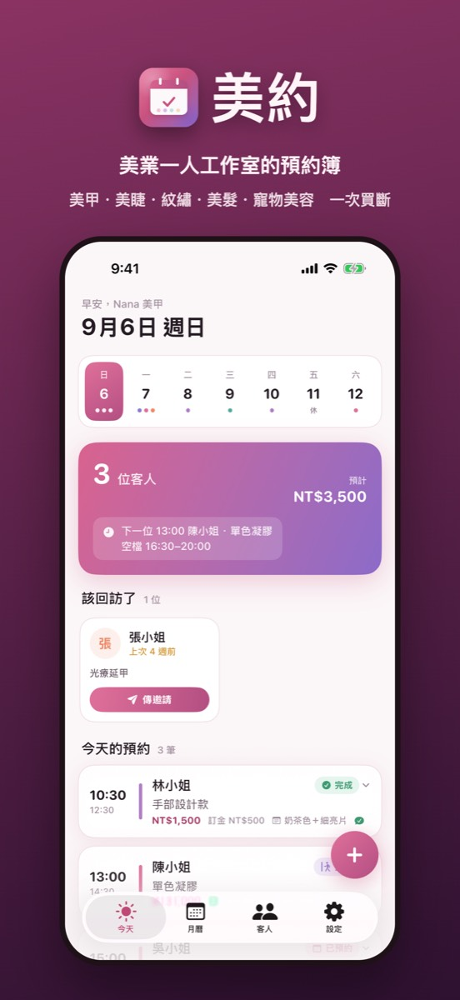
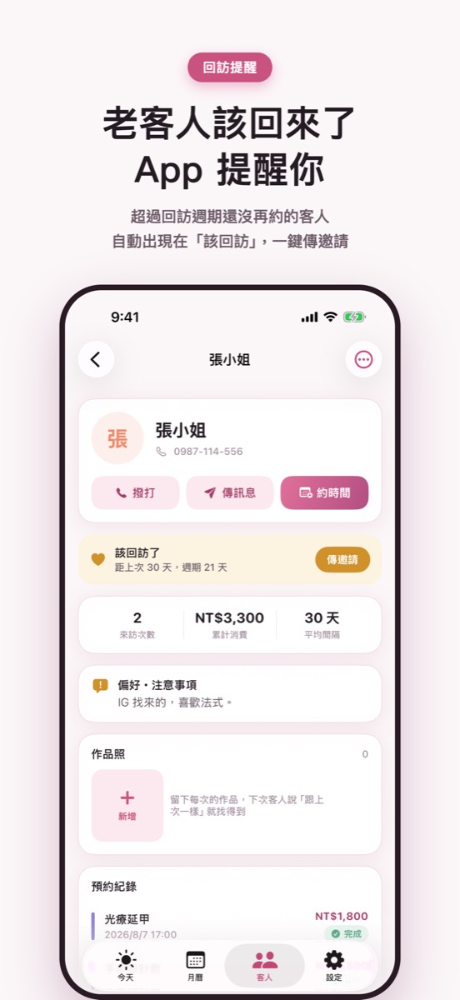
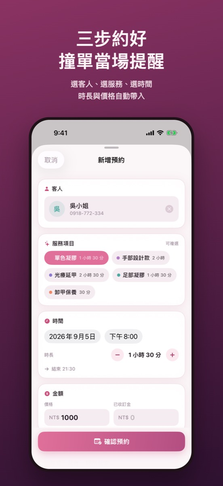

三步約好，時段重疊當場提醒；老客人該回訪了 App 會告訴你；確認、提醒訊息一鍵複製到 LINE。
在 App Store 下載


選客人、選服務、選時間，時長與價格自動帶入；時段重疊當場提醒，還會建議當天的空檔。
每位客人有回訪週期，超過還沒再約的會出現在「該回訪」，一鍵傳邀請。
範本自動帶入客人、日期、時間、服務，複製後貼到 LINE 或 IG，可以改成你的語氣。
過敏、喜歡的款式、每次的作品照和客人傳來的參考圖，都跟著客人。
實收、每週營收、服務與客人排行，一頁看完，可匯出 Excel。
備註寫「價格暫定」，之後搜「暫定」一次找出還沒確認的預約。
不用。打開就能約，資料存在你的手機，不經過我們的伺服器。
不用。現在是限時一次買斷、永久更新，下載後免費試用 14 天，所有功能都能用。
開啟自動雲端備份後，美約每天自動把資料（含照片）存一份到你選的 iCloud 雲碟資料夾，新手機匯入就全部回來。
App 幫你把確認、前一天提醒、回訪邀請寫好，複製後貼到 LINE、IG 或簡訊。
有。今日、本週、本月三種尺寸，不用打開 App 就看到下一位是誰。